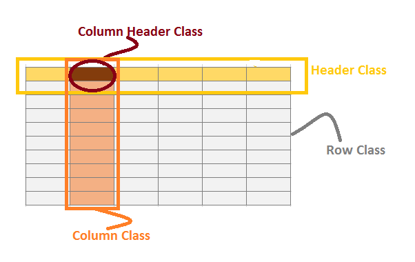
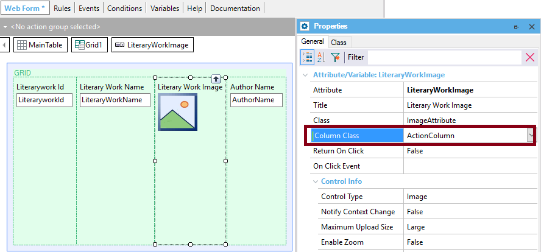
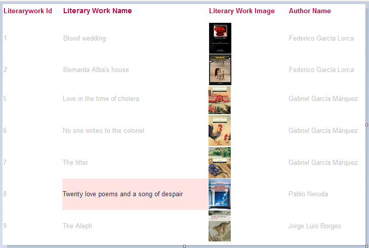
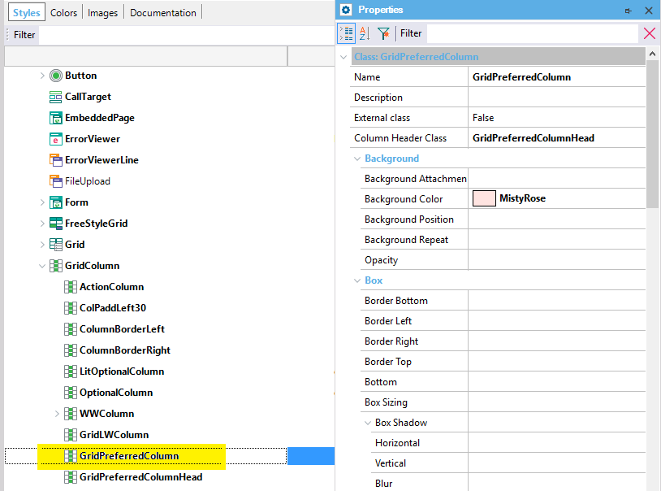

In web applications, there are several properties available for the grid in order to give a style to it.
In RWD, using the Abstract layout form, the properties are edited using the Theme Editor, and they are grouped under Theme Classes.
First of all, the Class property of the grid allows setting a Theme Class that groups all the classes for a Grid control.
In addition, since the grid looks like a table - although it isn't really an HTML table in some cases -, it can be given Theme Classes to style its rows, columns, and headers.
Graphically, the classes available for styling the grid are the following (all of them are grouped under the grid class):

So, the list of classes would be:
First, consider that each particular column of a grid can be configured using the Column Class property of the grid as shown in the figure:

In practice, you can configure all the columns of the grid using the Column Class Property of the Grid class.
Similar to the Column Class Property, there is a Row Class Property that allows configuring all the rows of the grid.
The headers of the grid can be configured using the gx-grid-header-row-class property.
In general cases, you need to highlight some particular column of the grid, for any particular row; e.g. when the balance is less than zero, you want to display that information highlighted.
In such case, use the Column property at runtime for that specific row, column; i.e. in a loop (which loads the grid data) you assign a Column class for the row and the column which meets certain conditions.
Event Grid1.Load
if authorName = 'Pablo Neruda'
literaryWorkName.ColumnClass = ThemeClass:GridPreferredColumn
else
literaryWorkName.ColumnClass = ThemeClass:GridLWColumn
endif
Endevent
Note that by rule, you have to assign the "default" class to the column when it doesn't meet the conditions; in the example, it is the "GridLWColumn" class.
At runtime, it looks as follows:

The GridPreferredColumn class is defined in the Theme as follows:

This is also explained in the Column Class Property.
In the case of a free style grid, you can use the Cell Class property with the same purpose.
To set the style of a specific column's header, use the Column Header Class Property.